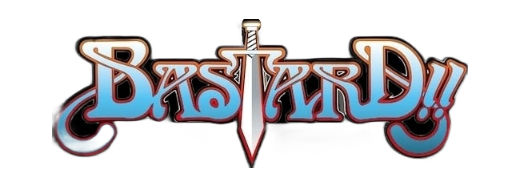
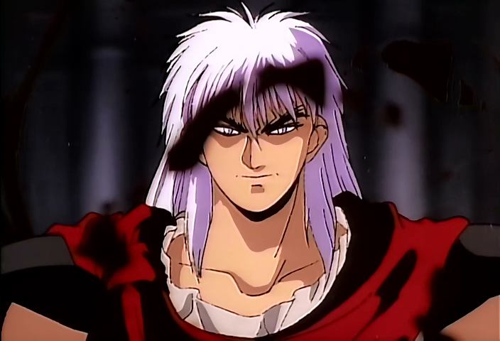
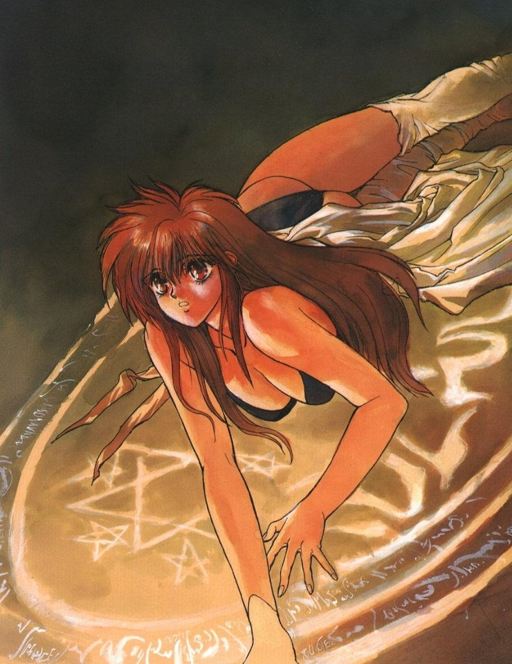
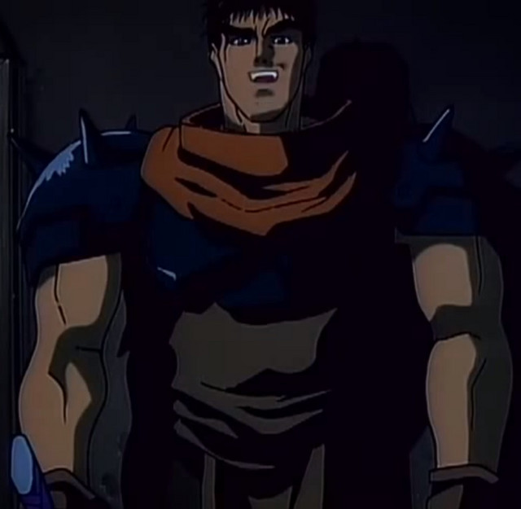
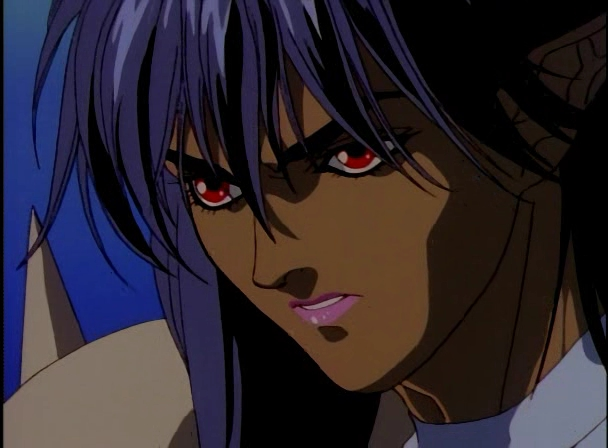
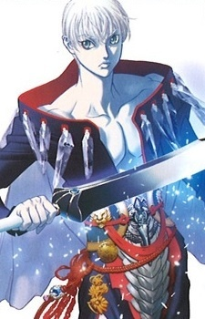

Главные герои
Дарк «Дарш» Шнайдер (яп. ダーク・シュナイダー Даку Сюнайда) — самый могущественный волшебник в мире, пятнадцать лет назад оказавшийся заточенным в теле маленького мальчика по имени Люше (яп. ルーシェ・レンレン Рюшэ Рэнрэн). Предпочитает чёрную и огненную магию, но не знает ни одного заклинания холода. Часто позволяет думать, что враги убили его, чтобы потом появиться со своей усмешкой и разочаровать их в этом. Бессмертен. Ему более 400 лет, но выглядит не старше 30. Поцелуй невинной девушки заставляет менять его форму (то есть поцелуй Дарша сделает его Люше, а поцелуй Люше пробудит Дарк Шнайдера). Любит женщин, одно время даже имел целый гарем. Обладатель легендарного Меча Пламени, в котором заточён ифрит.
 Тиа нот Ёко (яп. ティア・ノート・ヨーコ тиа ното ёко) — главная героиня аниме, дочь первосвященника Металликаны, защищает Люше по мере возможностей. Единственный человек, кого боится Дарк Шнайдер, и в то же время любит.
 Мастер-ниндзя Гара (яп. ガラ Гара) — мастер ниндзюцу, один из генералов Дарка Шнайдера. Огромный мускулистый воин, обладатель легендарного клинка Мурамаса
 Аршес Ней (яп. アーシェス・ネイ Асэсу Нэй) — наполовину человек, наполовину тёмная эльфийка. Дарк Шнайдер нашёл её, когда она была изгнана из своего племени, и воспитал как свою дочь и ученицу. Она же стала почти на сотню лет, и его любовницей. Имеет прозвище «Громовая императрица». Весьма искусна в магии.
 Кал-су (яп. カルス Кару Су) — второй генерал Дарка Шнайдера. Повелитель льда и холода. Как и Аршес Ней, был спасён Дарком, когда был ещё ребёнком.
Второстепенные герои
Темный Священник Абигейль (яп. アビゲイル Абигэйру) — достаточно могущественный священник, взявшийся пробудить Бога Тьмы. Манипулирует оставшимися генералами Дарка Шнайдера. Единственный, кто с самого начала не был на стороне Дарка, а просто боялся его силы.
Ларс (яп. ラーズ Рудзу) — небольшой синий дракон. Называется себя главным врагом Дарка Шнайдера в прошлом, Дарш этого не отрицает, но и не подтверждает. Ларс — брат принцессы Шилы, что означает, что он принц Металликаны. Имя «Ларс» — отсылка к Ларсу Ульриху, барабанщику «Metallica».
Бон Джовина — капитан-неудачник гвардии Металликаны. Его постоянно побеждают враги, но он всё равно выживает, чтобы проиграть чуть позже другому врагу. Ему совершенно не нравится Дарк Шнайдер, но он предан Металликане. Его имя — отсылка к рок-группе Bon Jovi.
Принцесса Шила (яп. シーラ 姫 Сира химэ) — принцесса Металликаны. Симпатичная и скромная девушка, исполнена решимости как можно лучше исполнить свой долг перед страной.
Джео нот Сорт (Сото) — могущественный священник, отец Ёко. Сумел заточить Дарша в теле мальчика. Является первосвященником Металликаны. По началу — ненавидит Дарка Шнайдера, но впоследствии их отношения немного улучшаются. Силён как в защитной магии. так и в рукопашном бою.